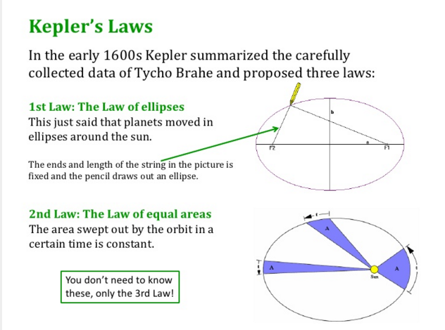
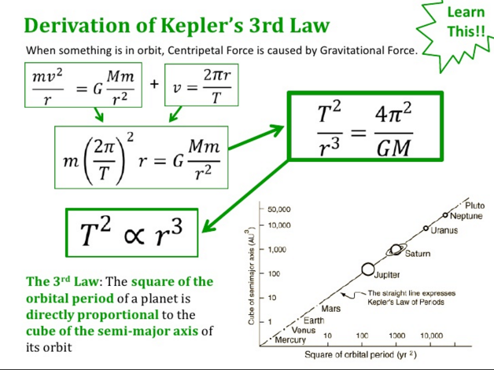

Johannes Kepler
Johannes Kepler
Kepler is remembered as an astronomer, in particular for discovering three laws that describe the motion of the planets. These are
-
1. The path of each planet is an ellipse with the Sun at one of its foci.
-
2. As the planet moves along its path, a line joining the planet to the Sun sweeps out equal areas in equal times.
-
3. For any two planets, the ratio of the squares of their periods of revolution about the Sun is the same as the ratio of the cubes of their mean distances from the Sun.
These are usually known as "Kepler's three laws of planetary motion." Kepler realized that the planets traveled in "stretched out" circles known as ellipses. The sun didn't sit exactly at the center of their orbit, but instead lay off to the side, at one of the two points known as the focus. Some planets, such as Earth, had an orbit that was very close to a circle, but the orbit of Mars was one of the most eccentric, or widely stretched. The fact that planets travel on elliptical paths is known as Kepler's First Law. Kepler studied changes in the velocities of the planets. He realized that a planet moved slower when it was farther away from the sun than it did when nearby. Once he understood that planets traveled in ellipses, he determined that an invisible line connecting the sun to a planet covered an equal amount of area over the same amount of time. He posited this as his Second Law, along with his first in 1609.
Kepler's Third Law was published 10 years later, and recognized that the relationship between the period of two. The square of the ratio of the period of two plants is equal to the cube of the ratio of their radius. While his first two laws focus on the specifics of a single planet's movement, his third is a comparison between the orbits of two planets.
Other notable discoveries: Kepler is obviously best known for his laws regarding planetary motion. Additionally, he made several other significant contributions to science. He was the first to determine that refraction drives vision in the eye, and that using two eyes enables depth perception. He created eyeglasses for both near and farsightedness, and explained how a telescope worked. He described images and magnification, and understood the properties of reflection. Kepler claimed that two bodies, rather than one caused gravity, and as such, the moon was the cause of the motion of tides on the Earth. He suggested that the sun rotates, and created the word 'satellite'. He tried to use his knowledge of the distance Earth travels to measure the distance to the stars. Kepler also calculated the birth year of Christ.